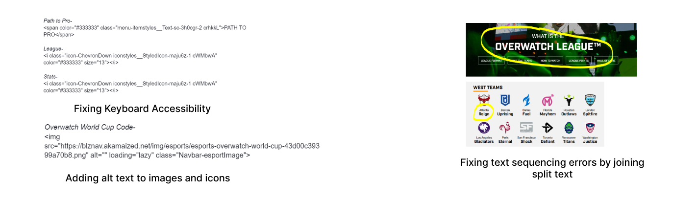

Coming up with solutions



Designed and Built by Naman Phadnis
I performed an accessibility test for the Overwatch League's official website through an automated accessibility tester and manual inspection. The website is something I use frequently and I designed solutions to make it more accessible for everyone who uses it.
I inspected the website for violations of the WCAG 2.0 guidelines at A and AA levels. I used a screen reader to peruse through the website and came across several A-level errors, and a few AA-level ones.
I used the NVDA Screen Reader(v 2021.3) and Microsoft Edge 64 bit(v 96.0.1054.43) for the manual inspection. The inspection resulted in over 43 violations, including- 16 non-text content errors with images and logos, 25 sequence and text formatting errors, 2 keyboard accessibility errors.
I used the WAVE extension to do an automated scan for the website's accessibility. After letting the software scan the website, it displayed all the violations that it discovered in the results.
Apart from the violations, the automated scan also displayed contrast errors that it discovered throughout the website. It also showed where the website had really good accessible features.
Designed and Built by Naman Phadnis